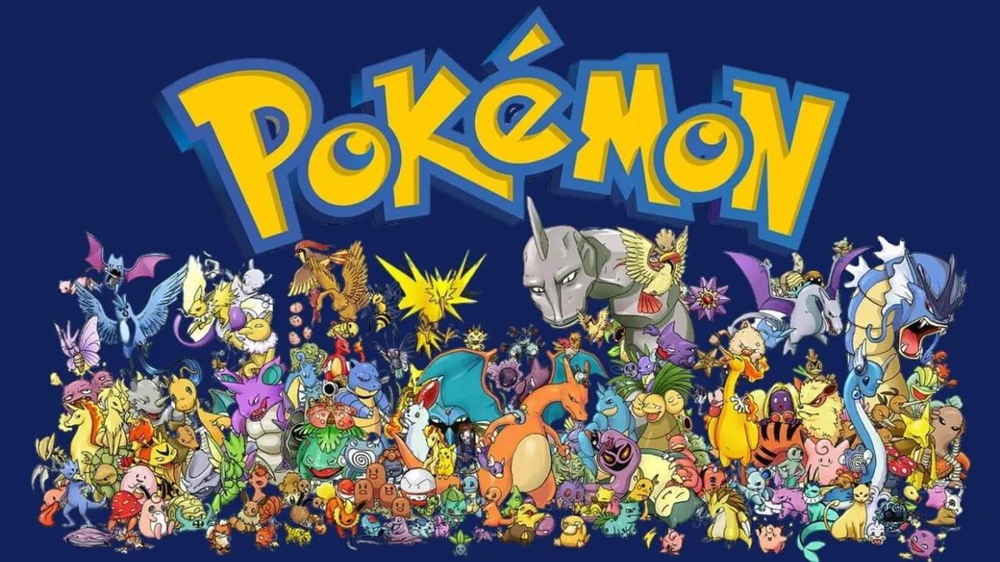
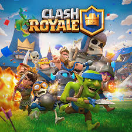
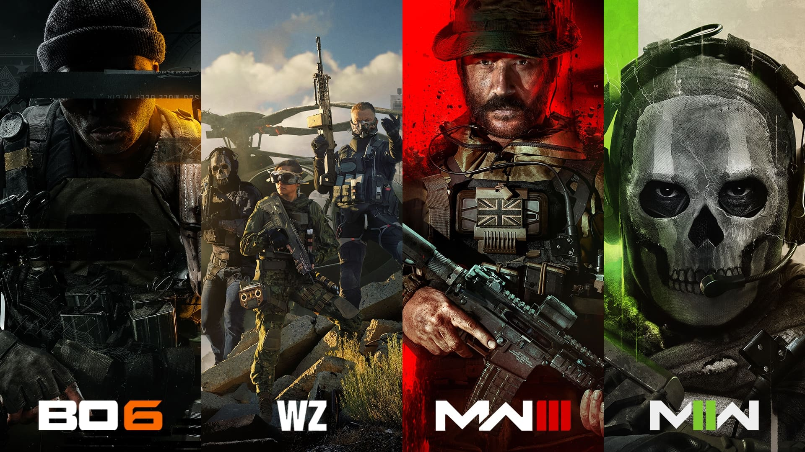
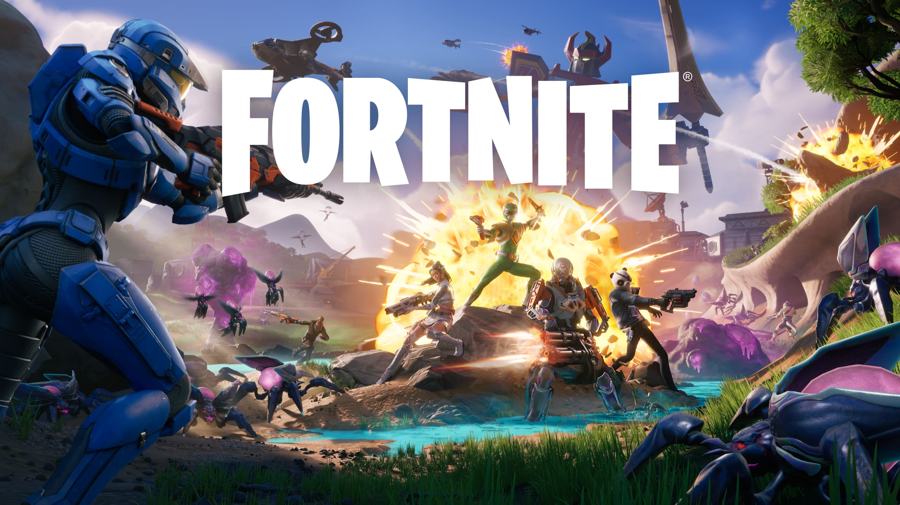

- Pokemon: Saga de videojuegos donde los jugadores capturan, entrenan y combaten criaturas llamadas Pokémon. 
- FIFA: Simulador de fútbol de EA Sports con ligas, equipos y torneos reales.
- Clash Royale: Juego de estrategia en tiempo real para móviles con cartas y batallas. 
- Tetris: Clásico puzzle donde encajas piezas para completar líneas.
- CoD: Shooter en primera persona con campañas intensas y multijugador competitivo. 
- Buscaminas: Juego de lógica para descubrir casillas vacías evitando minas.
- Fortnite: Battle Royale con construcción y combate donde gana el último en pie. 
Pokemon fue parte de mi infancia, le tengo un gran cariño

Debes en cuando juego FIFA, me siento como un verdadero DT jajaaja, anque, no tengo idea de dirijir un equipo de futbol
Una partida de chill 🤙

Un clasico
Campañas good

Para que se pase el tiempo en el camión xd
Nunca muere el juego y no se porque